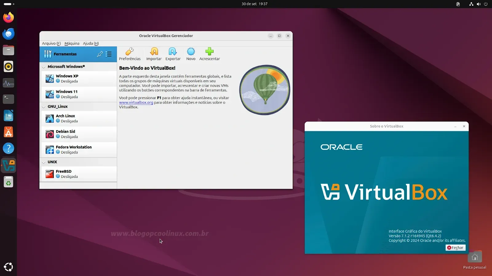
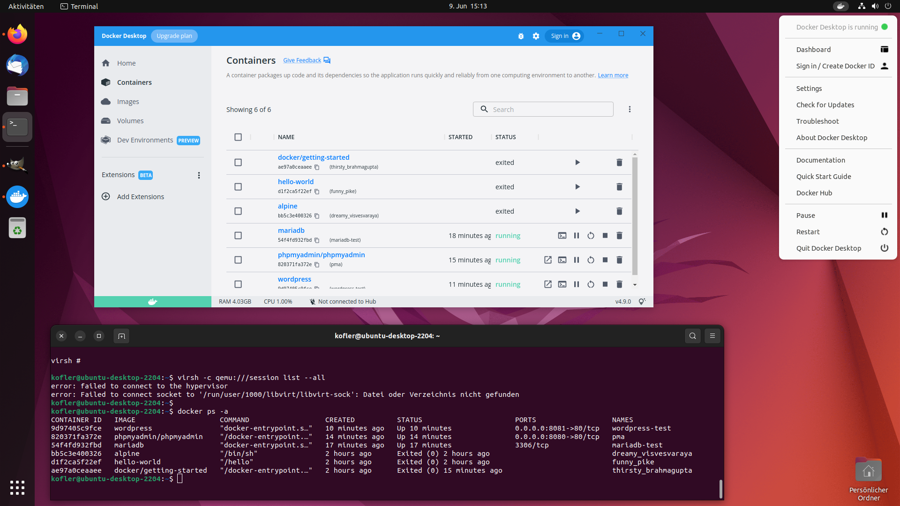
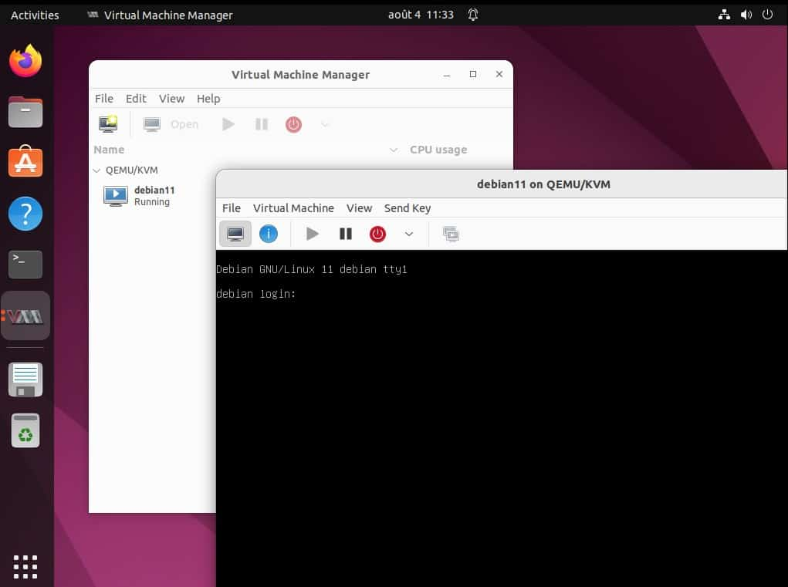

VirtualBox
Para criar e gerenciar máquinas virtuais, permitindo rodar diferentes sistemas operacionais no Ubuntu.
Docker
Plataforma para gerenciar e implantar contêineres, proporcionando isolamento de aplicativos e suas dependências.
KVM (QEMU)
Alternativa de virtualização integrada ao kernel Linux, com suporte a máquinas virtuais e contêineres.
